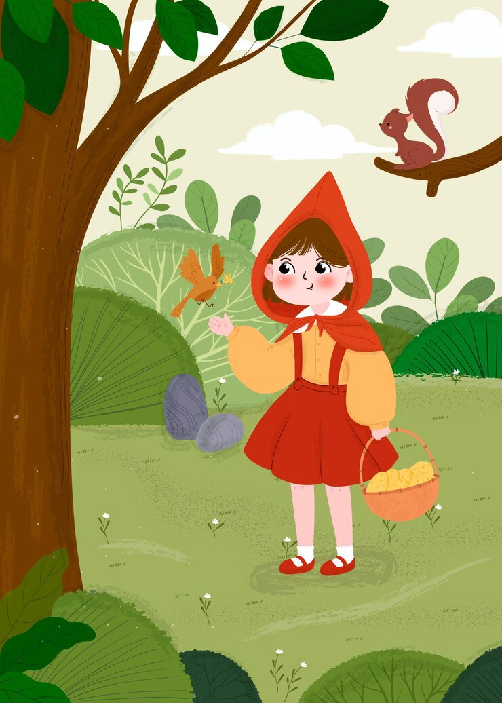
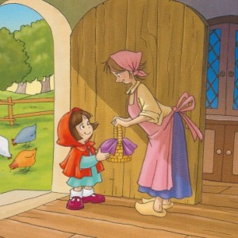
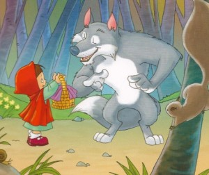
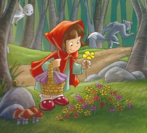
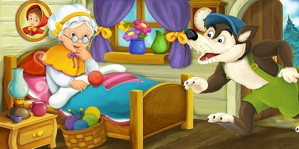
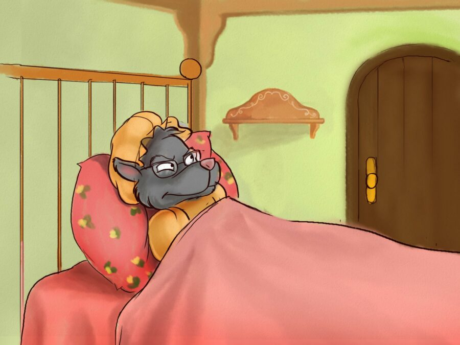
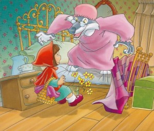
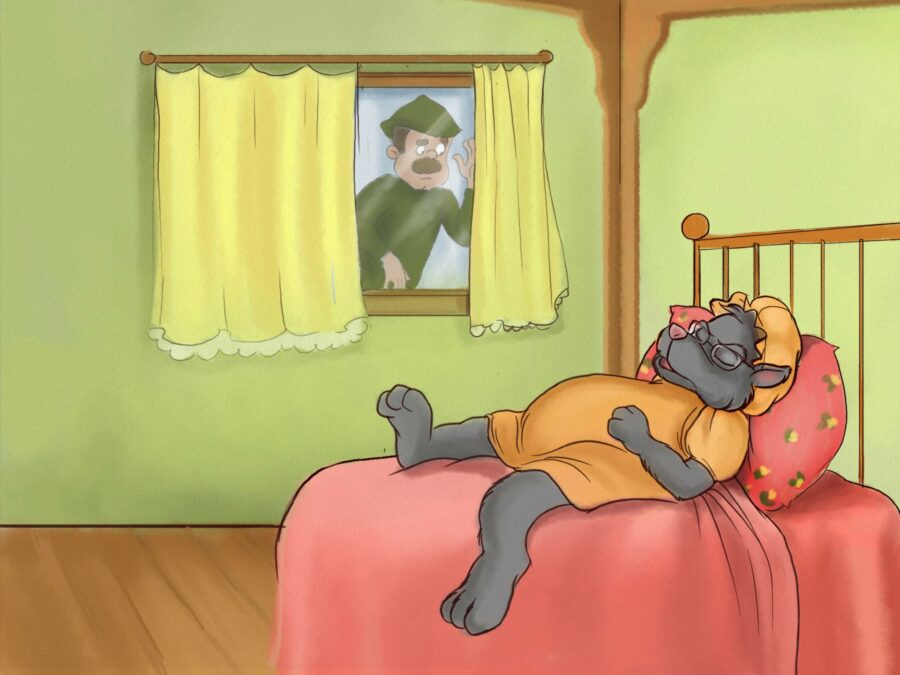

Había una vez una niña buena y cariñosa que vivía con su mamá en un pueblito rodeado por un hermoso bosque.Todos la querían muchísimo, pero quien más la quería era su abuela. Siempre pensaba en ella y se ocupaba de tejerle guantes y bufandas abrigadas para los días de mucho frío. En una ocasión, la abuelita le regaló una capa roja con capucha. A la niña le gustaba tanto que no se la quitaba nunca. Así fue que todo el mundo comenzó a llamarla Caperucita Roja.
Un día, su madre le dijo: -La abuela está enferma. Llévale este pedazo de pastel de moras que he preparado y una botella de leche. El camino es largo y tienes que atravesar el bosque. No te desvíes del sendero, no vayas saltando que puedes caerte y se puede romper la botella. No olvides saludar a la abuela cuando llegues y no te pongas a curiosear por todos los rincones. Pero, sobre todo, no hables con desconocidos. -No te preocupes, mamá; lo haré todo bien -dijo Caperucita y se despidió.
A mitad de camino, salió a su encuentro un lobo que parecía estar esperándola. Con una gran sonrisa, la fiera la saludó: -Buenos días, Caperucita. -Buenos días, lobo -contestó Caperucita sin miedo porque no sabía lo malo que era el lobo. -¿Adónde vas tan temprano? -preguntó el lobo. -A ver a mi abuela. -¿Y qué llevas en la cesta? -Un pastel de moras y una botella de leche para que la abuela se ponga bien. -¿Y dónde vive tu abuela, Caperucita? -volvió a preguntar el lobo. -En medio del bosque. Debajo de los tres grandes pinos está su casa.
 El lobo siguió caminando al lado de Caperucita,
pensando cómo haría para comerse no sólo a la niña,
sino también a la abuela. Entonces le dijo:
-¿Has visto qué hermoso está el bosque? Mira cuántas
flores silvestres crecieron junto al camino. Vas caminando de prisa y no ves ni oyes nada. Aquí en el bosque todo es muy divertido si te detienes a contemplarlo.
El lobo siguió caminando al lado de Caperucita,
pensando cómo haría para comerse no sólo a la niña,
sino también a la abuela. Entonces le dijo:
-¿Has visto qué hermoso está el bosque? Mira cuántas
flores silvestres crecieron junto al camino. Vas caminando de prisa y no ves ni oyes nada. Aquí en el bosque todo es muy divertido si te detienes a contemplarlo.
Caperucita Roja se desvió entonces del sendero y recorrió lo más profundo del bosque en busca de flores de diversos colores para su abuela..
Mientras tanto, el lobo se fue corriendo a la casa de la abuela. El malvado sabía muy bien cuál era el camino más corto. Apenas llegó, llamó a la puerta suavemente. ¡TOC, TOC! -¿Quién es? -preguntó la abuela. -Caperucita Roja -dijo el lobo suavizando la voz-. Te traigo pastel de moras y leche. Ábreme. -Estoy muy débil y no puedo levantarme. No tienes más que girar el picaporte y se abrirá la puerta. El lobo giró el picaporte y la puerta se abrió. Sin decir una palabra, el lobo fue hasta la cama de la abuela y se la tragó de un solo bocado. Luego se puso el camisón de la anciana, se colocó la cofia en la cabeza, cerró las cortinas y se acostó en la cama.
Entretanto, Caperucita seguía entretenida en el bosque. Cuando ya había recogido las flores, se acordó de la abuela y regresó al sendero que la llevaba a su casa. Apenas llegó, llamó a la puerta suavemente. ¡TOC, TOC! -¿Quién es? -preguntó el lobo imitando la voz de la abuela. -Soy Caperucita Roja. Te traigo pastel de moras y leche. Ábreme. ¡Entra, querida niña, no tienes más que girar el picaporte y se abrirá la puerta! Caperucita fue directamente al dormitorio de la abuela. Corrió las cortinas, se acercó a la cama y saludó: -Buenos días.
Allí estaba la abuela, con la cofia en la cabeza. Se veía tan extraña que no parecía la abuela. La pequeña casi no pudo reconocerla. “¡Qué rara está! Debe estar muy enferma”, pensó. Se acercó a la cama y le dijo extrañada: -¡AY, ABUELA! ¡QUÉ OREJAS TAN GRANDES TIENES! -PARA OÍRTE MEJOR -respondió el lobo disimulando su voz. -¡AY, ABUELA! ¡QUÉ OJOS TAN GRANDES TIENES! -PARA VERTE MEJOR. -¡AY, ABUELA! ¡QUÉ MANOS TAN GRANDES TIENES! -PARA ABRAZARTE MEJOR. ¡AY, ABUELA! ¡QUÉ BOCA TAN GRANDE TIENES! -PARA COMERTE MEJOR. - Y diciendo esto, el lobo saltó de la cama y se tragó a Caperucita Roja de un solo bocado. Tenía la barriga tan llena que volvió a meterse en la cama, se durmió y se puso a roncar.
Un rato más tarde, un cazador que pasaba por allí, se sorprendió al escuchar los horribles ronquidos del lobo. Pensó: “La abuela ronca pero nunca tan fuerte. Pasaré a verla, estuvo enferma los últimos días. Me aseguraré de que esté bien.” -Ven conmigo -le dijo a su perro-. Aquí pasa algo raro. “¡Lobo malvado! ¡Por fin te encuentro! ¡Tanto tiempo buscándote!”, pensó el cazador y levantó la escopeta para dispararle. “Se ha comido a la vieja señora. Tal vez estemos a tiempo para salvarla”. Así que lo pensó mejor y no disparó. Entró a la casa y llegó al dormitorio de la abuela. Al acercarse a la cama vio al lobo acostado y roncando a pierna suelta.
 Buscó unas tijeras en el costurero de la abuela y,
con mucho cuidado, empezó a abrir la barriga del lobo.
Apenas había dado los primeros cortes cuando vio relucir
la roja caperucita. Dos cortes más y la niña saltó
de la barriga del lobo diciendo:
-¡Qué oscuro estaba allí adentro!
La abuela tardó un poco más en salir. Había pasado tanto
miedo que no hacía más que temblar.
El cazador le dijo a la niña:
-Ve hasta la orilla del arroyo y trae todas las piedras
que encuentres. El lobo puede despertar en cualquier
momento.
Buscó unas tijeras en el costurero de la abuela y,
con mucho cuidado, empezó a abrir la barriga del lobo.
Apenas había dado los primeros cortes cuando vio relucir
la roja caperucita. Dos cortes más y la niña saltó
de la barriga del lobo diciendo:
-¡Qué oscuro estaba allí adentro!
La abuela tardó un poco más en salir. Había pasado tanto
miedo que no hacía más que temblar.
El cazador le dijo a la niña:
-Ve hasta la orilla del arroyo y trae todas las piedras
que encuentres. El lobo puede despertar en cualquier
momento.